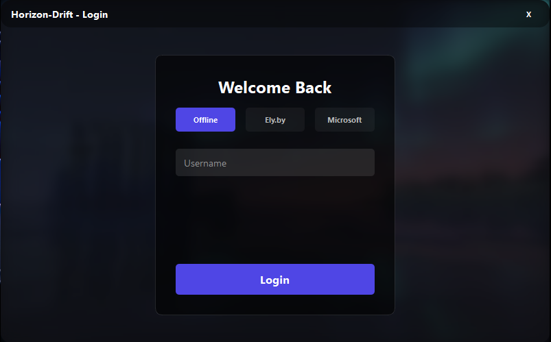
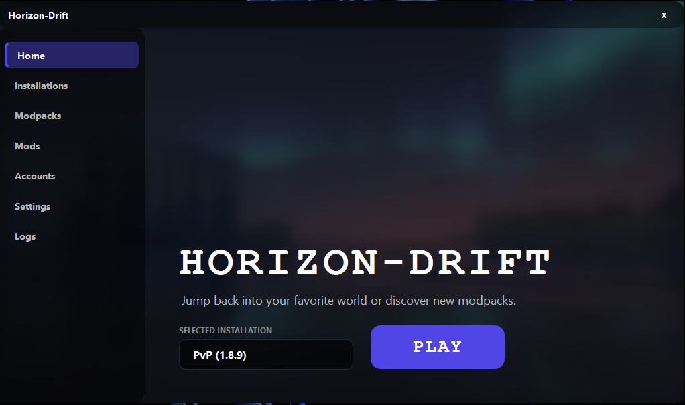
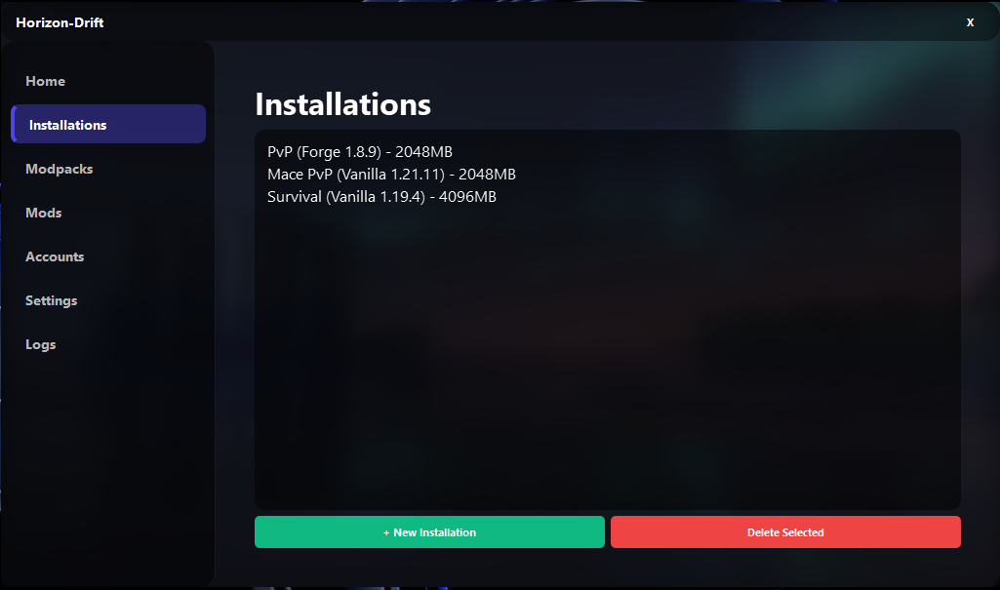
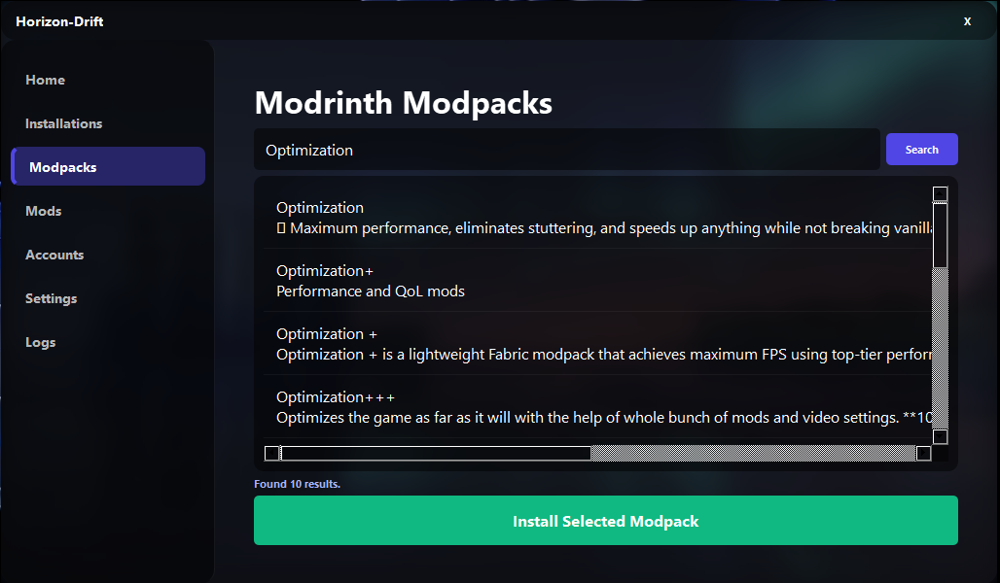

A high-performance, minimalist Minecraft Java launcher. Refined by intelligence, defined by the drift. Launch at the speed of thought.
Automatically calculates optimal Java arguments and RAM distribution based on your PC's hardware.
Extremely lightweight Python backend stays under 50MB of RAM. No bloat, just pure performance.
Effortlessly organize Vanilla, Snapshots, and Modpacks with color-coded, isolated environments.



